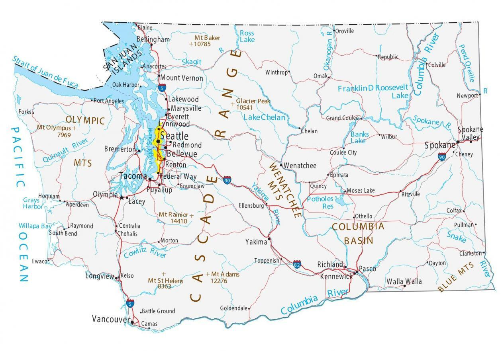

Discovering Olympia
 alt="Washington state map">Olympia, nestled in the Pacific Northwest, is a city of captivating contrasts. Explore the Capitol Building, stroll along the waterfront, and experience the unique blend of tradition and modernity that defines Olympia. The city boasts a vibrant cultural tapestry woven from diverse communities, each contributing to the overall vibrancy that defines our capital.
Facts about Olympia
-
City's Population:
As of the last estimate in 2022, Olympia's population is approximately 52,000.
-
City Incorporation Date:
Olympia became a city on November 28, 1859.
-
Region:
Olympia is a part of the Puget Sound region, contributing to the overall diversity of Washington State.
-
Cityscape:
Olympia boasts a mix of urban and suburban areas, providing a high quality of life for its residents. The city's architecture and green spaces reflect its commitment to sustainability and environmental stewardship.
-
Cultural Scene:
Explore Olympia's thriving cultural scene, from museums to theaters, showcasing the city's commitment to creativity and discovery. Visit institutions like the Washington State Capitol and the Hands On Children's Museum to experience the rich cultural tapestry of Olympia.
This month's events in Olympia
| Monday | Tuesday | Wednesday | Thursday | Friday | Saturday | |
|---|---|---|---|---|---|---|
| 12/5-12/11 | Olympia Art Week | City Green Initiatives Workshop | Community Volunteer Day | Olympia Farmers Market | ||
| 12/12-12/18 | Holiday Lights Parade | Winter Safety Seminar | Government Innovation Expo | Employee Appreciation Day (Half Day) | Capitol Building Tour | |
| 12/19-12/25 | Environmental Sustainability Forum | Public Service Awards Ceremony | City Hall Open House | Staff Retreat (Full Day) | ||
| 12/26-12/31 | Holiday Celebration | Olympia History Museum Exhibition | Leadership Training | Employee Wellness Day | ||
| 01/01-01/07 | New Year's Day (Office Closed) | Year-End Review Meeting | Employee Development Workshop | Weekend Retreat |